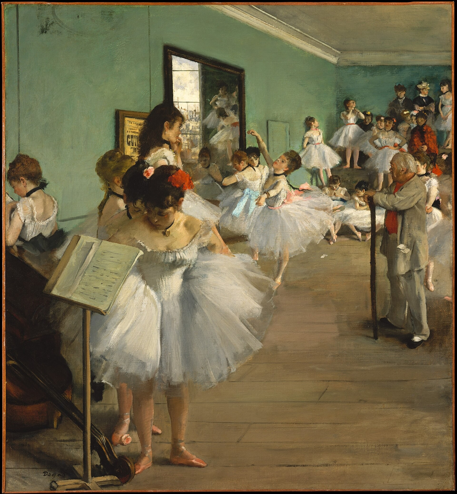

舞蹈课 The Dance Class
德加 · 1874年 · 纽约大都会艺术博物馆
Edgar Degas · 1874 · The Metropolitan Museum of Art, New York
图片：大都会艺术博物馆开放资源（CC0），公有领域 / Image: The Met Open Access (CC0), public domain

发现 · Discover
芭蕾大师 The ballet master
主持这堂课的是著名的芭蕾大师于勒·佩罗。1874年他已经64岁，退休后经常在歌剧院教课。
The class is led by the famous ballet master Jules Perrot. In 1874 he was 64, a retired master who often taught classes at the Opéra.
手杖 The cane
佩罗站在画面右边，看起来却像在房间中央。他双臂伸开，双手扶着一根长手杖。
Perrot stands at the right of the picture, yet seems to be at the centre of the room, arms outstretched, hands resting on a long cane.
考试 The examination
中间一位舞者正在做“阿提丢”（attitude）舞姿，接受考试。
In the middle, a dancer performs an "attitude" for her examination.
等待的人 Those who wait
画中大约有24位女性，是芭蕾舞者和她们的母亲，都在等待。
Some 24 women, dancers and their mothers, are waiting.
墙上的海报 The poster
镜子旁边贴着罗西尼歌剧《威廉·退尔》的海报，是向委托这幅画的歌唱家福尔致敬。
Beside the mirror is a poster for Rossini's opera William Tell, a tribute to the singer Faure, who commissioned the picture.
已经不在的歌剧院 An opera house now gone
这间排练室在旧巴黎歌剧院里，而那座歌剧院不久前刚被烧毁。这是一个想象的场景。
This rehearsal room is in the old Paris Opéra, which had recently burned down. The scene is imagined.
故事 · The story
ACT I 第一幕 · 一份委托 A commission
1873年，著名的歌剧男中音让-巴蒂斯特·福尔，请德加画一幅芭蕾舞者上课或考试的画。
In 1873, the famous opera baritone Jean-Baptiste Faure commissioned Degas to paint ballet dancers at a class or examination.
1874年 · 纽约大都会艺术博物馆 / 1874 · The Metropolitan Museum of Art, New York
ACT II 第二幕 · 想象的教室 An imagined classroom
19世纪70年代前半期，德加花了很多时间在巴黎歌剧院，观察教室、排练室和舞台上的课程和排练。但这间教室是他想象出来的：它所在的旧歌剧院，不久前刚被烧毁。
In the early 1870s, Degas spent a great deal of time at the Paris Opéra, watching classes and rehearsals. But this room is imagined: the old opera house it belonged to had recently burned down.
1874年 · 纽约大都会艺术博物馆 / 1874 · The Metropolitan Museum of Art, New York
ACT III 第三幕 · 两个版本 Two versions
1876年，福尔把这幅画借给了印象派画展。这一幅和奥赛博物馆的另一版本，是德加以舞蹈为主题最有雄心的两幅作品。今天，它在纽约大都会艺术博物馆的815展厅。
In 1876, Faure lent the painting to the Impressionist exhibition. This work and its variant in the Musée d'Orsay are Degas's most ambitious paintings of dance. Today it hangs in Gallery 815 of the Metropolitan Museum.
1874年 · 纽约大都会艺术博物馆 / 1874 · The Metropolitan Museum of Art, New York
一堂想象的舞蹈课，在一座已经不在的歌剧院里。 An imagined dance class, in an opera house that was already gone.
作品档案 · Artwork record
| 画家（生卒年） · Artist (dates) | 埃德加·德加（1834–1917） / Edgar Degas (1834–1917) |
|---|---|
| 画名 · Title | 舞蹈课 / The Dance Class |
| 年份 · Date | 1874年 / 1874 |
| 材质 · Medium | 布面油画 / Oil on canvas |
| 尺寸 · Dimensions | 83.5 × 77.2 cm |
| 收藏地 · Collection | 纽约大都会艺术博物馆，815展厅 / The Metropolitan Museum of Art, New York, Gallery 815 |
| 来源说明 · Credit line | 哈里·佩恩·宾厄姆夫人遗赠，1986年（馆藏编号 1987.47.1） / Bequest of Mrs. Harry Payne Bingham, 1986 (1987.47.1) |
关于画家 · About the artist
埃德加·德加（1834–1917），法国画家，生于巴黎。他参加了印象派画展，以描绘芭蕾舞者著称。
Edgar Degas (1834–1917) was a French painter, born in Paris. He took part in the Impressionist exhibitions and is best known for his paintings of ballet dancers.